One of the most iconic hiking trails in New Zealand is the Routeburn Track, which is typically done as a backpacking trip spanning 3 days and 2 nights. It's a 20-mile, point-to-point trail where the driving distance between the endpoints is around 5 hours due to the mountainous terrain of the Southern Alps. Most backpackers either go on an arranged tour or use a bus service.
Because I was solo traveling in a rental car, my only option was to do a day hike from the same point. The most challenging acceptable day hike variant of the trail is the 10 hour, 16.6 mile out-and-back trek up to Lake Harris.
Seeing only 8.3 miles of the trail didn't seem satisfying enough. I wanted to experience as much of the trail as possible, and so I came up with a diabolical idea of covering 14 miles one-way (in total 28 miles out-and-back) by trekking all the way past Lake Mackenzie, the stopping point of night two on the trail.
This means I'd be effectively hiking 4/3 of the entire trail in a day, and would have to speedwalk or trailrun a significant portion. And yet, with unwavering confidence, on the early morning of February 27th, I set out on what would be my longest hike ever to date.
The first stretch of the trail featured several suspension bridge crossings across green-blue rivers amidst some beech forests.
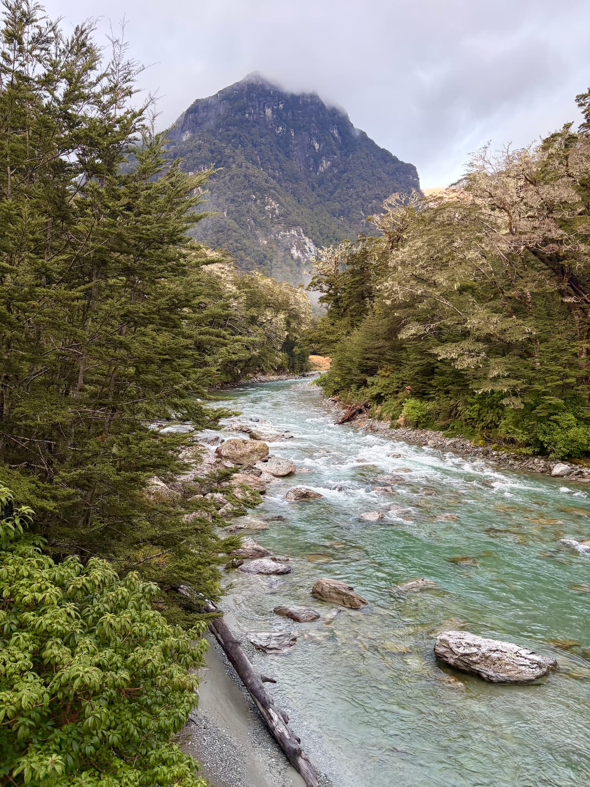
The track then opened up into a wide valley split by the meandering Routeburn River. Although it was quite overcast, it cleared up briefly and I was able to see a hint of the sun and blue sky. The first five to six miles in the valley were extremely flat so I covered ground quickly.
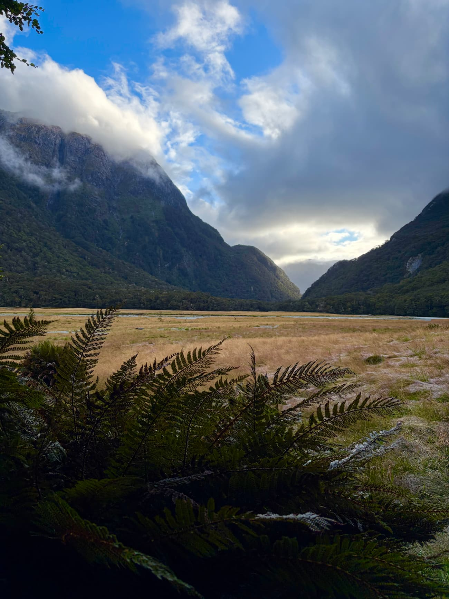
I followed the river upwards towards Routeburn Falls hut, one of the overnight stops of the trail. I took a small detour to a river access point called Forge Flat. The river here was a deep silty blue, but in the dim early morning light the pictures I took don't do it justice. I'd imagine in warmer weather the flat would be an exceptional place to take a dip. Eventually, I reached the hut. It took me around an hour and a half from the start.
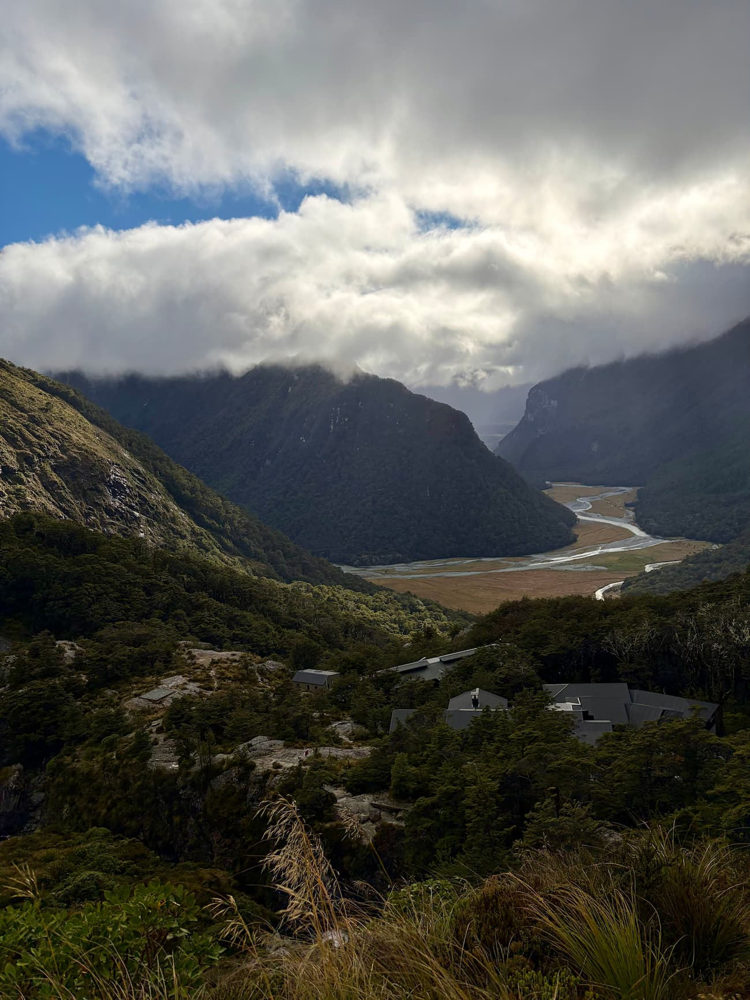
At the Routeburn Falls hut, I ran into several other hikers who were just departing for their last stretch of the hike. I was incredibly impressed by the quality and cleanliness of the hut, and after a quick bathroom break, I continued onwards up to the Harris Saddle Shelter.
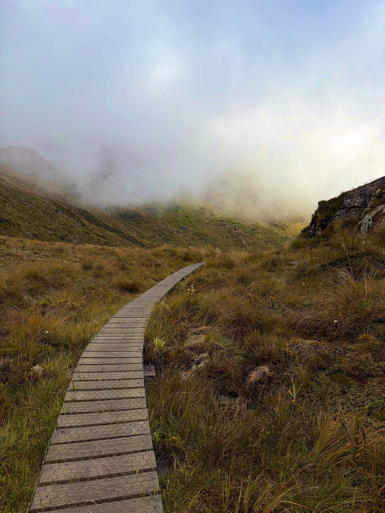
The first half of this stretch up to Lake Harris was relatively flat. But as I began to climb the steeper second half of the stretch, the thick clouds and fog started to roll in. At a certain point, visibility was reduced to just a few dozen feet in front of me, and I couldn't make out anything in the distance.
Along with the fog came blistering winds and rain. Rocking shorts and a t-shirt was no longer going to cut it, so I put on a pair of long pants, a small jacket, and a raincoat.
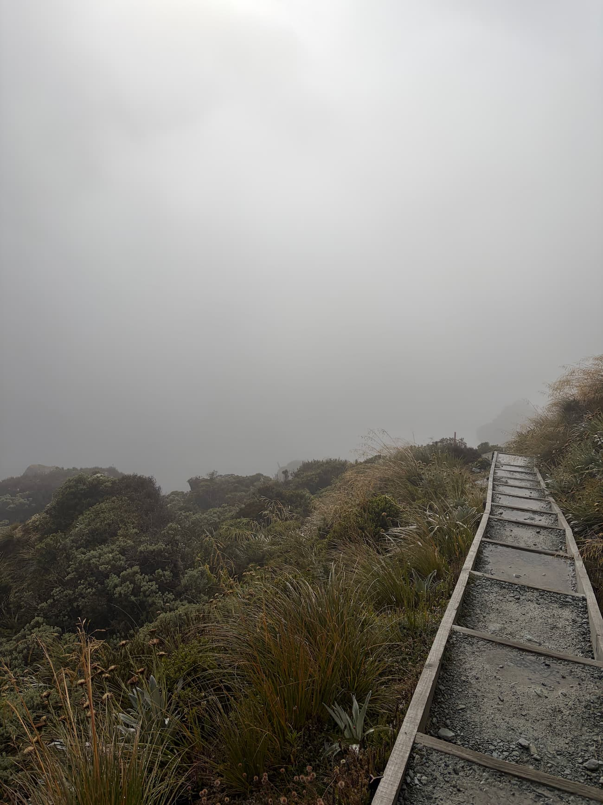
I eventually made it to Harris Saddle Shelter, which is where most day-hikers end their journey. The visibility was so poor that I couldn't make out Lake Harris at all. I hadn't looked at pictures of the hike prior, so I had no idea what I was missing. I camped out in the shelter for a bit to down some granola bars and gummy bears before continuing up past the saddle.
There was nothing but thick fog until I reached the cusp of the saddle. Harris Saddle acts as a mountain pass between Conical Hill and the rest of the mountain range to the south. Upon passing through to the other end of the pass, the fog gave way to one of the most glorious valley views I have ever seen.
I stopped for a while to admire the views of the valley. At this point, I was around 9 miles into the hike one-way. The clear weather on this side of the mountain range gave me a newfound sense of motivation, however, and I continued along the valley towards Lake Mackenzie.
After a few more miles, I turned a corner, giving way to a view of Lake Mackenzie down below.
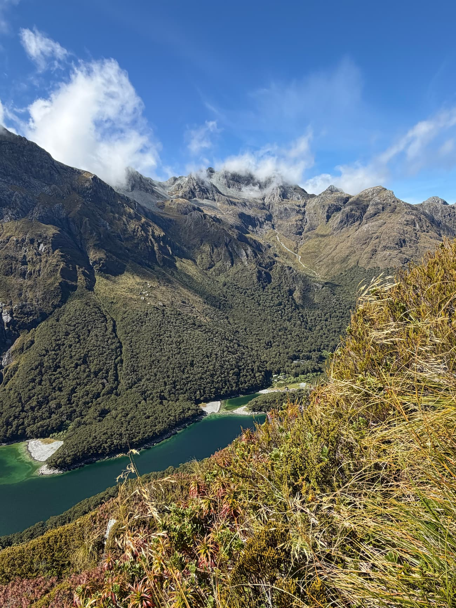
As you can probably tell from the photo, it's a pretty steep descent from the mountainside down towards the lake. This stretch was definitely the most drastic change in elevation across my entire hike. The descent was a bit taxing on my recurring shin splints, but was otherwise not too challenging. Towards the bottom the trail transformed into a very lush forest littered by ferns and mosses. I suspect that the forests here are greener than those on the eastern side of the trail due to more rainfall closer to the west coast of New Zealand as well as proximity to Lake Mackenzie.
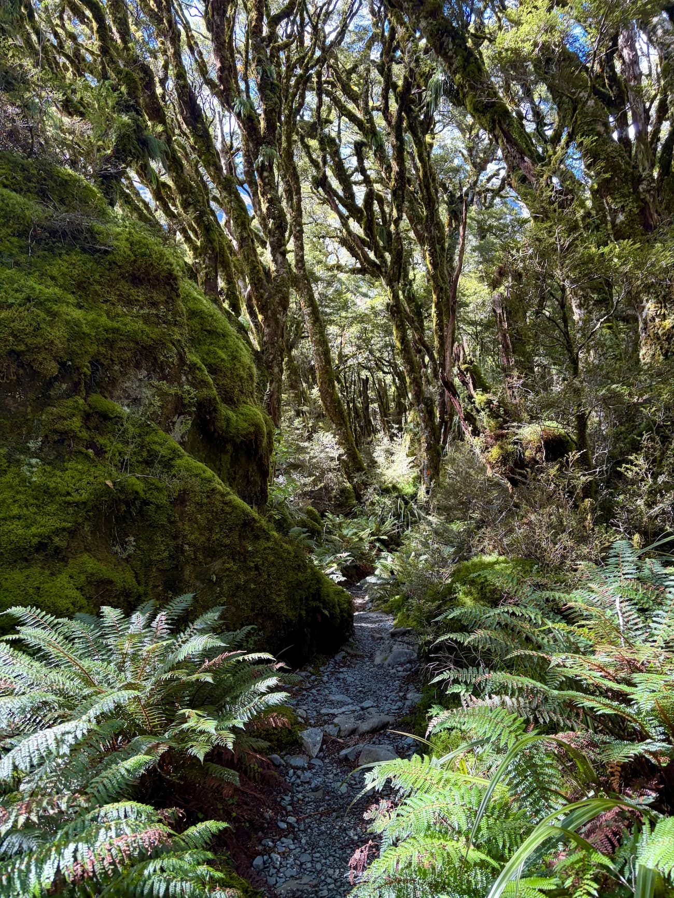
Soon, I arrived at the shores of the lake. The sun was beating down at full force now, and so I was incredibly tempted to take a dip in the lake. I'm generally not a fan of getting wet on hikes so I decided against it, but chose to spend around two hours or so to enjoy the scenery and refuel.
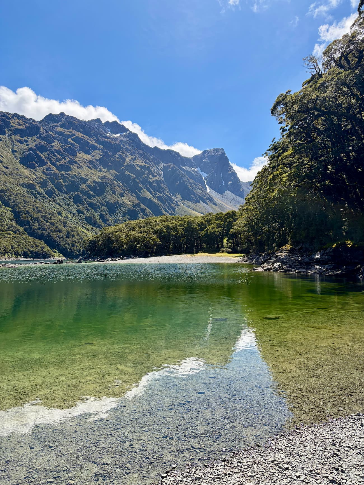
I continued onwards briefly past the Lake Mackenzie hut to see if there were going to be any other interesting views. It became apparent quickly that I'd be stuck in the same mossy overgrowth as before, so I decided to turn back around a mile past the lake.
Hiking back presented better weather than the first leg of the hike, and so I was finally able to see what I had missed due to the fog east of the saddle. Passing back towards the Harris Saddle Shelter, I finally was able to see Lake Harris, which was much more grand and beautiful than I had expected. If you look closely in the distance, there's a pretty tall waterfall that eventually flows into the lake!
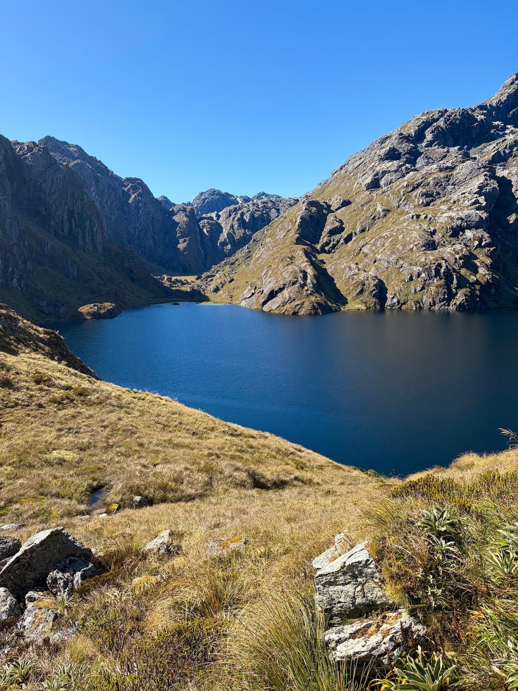
The visibility remained perfect for the rest of the hike. As I descended back towards the Routeburn Falls hut, I was able to see mountain ranges in the distance I was unable to before. This, combined with brighter afternoon lighting, gave way to some pretty spectacular views of the Humboldt mountains. The valley shot below is one of the canonical photo locations of the Routeburn Track.
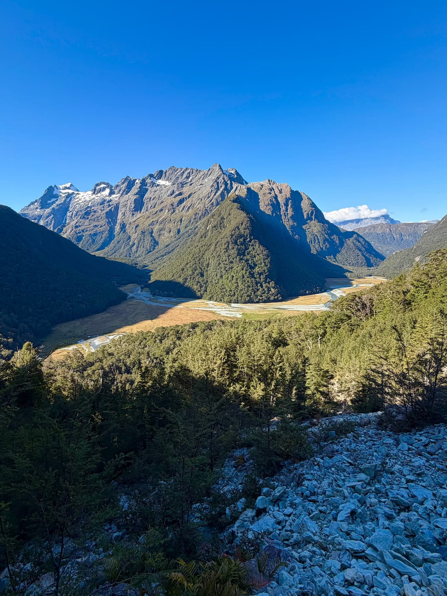
Something I've been trying to do a better job at recently is noticing really small details around me. I found this small waterfall glimmering in the sunlight to be particularly beautiful, and by random luck, I managed to capture a kea flying overhead as well!
If you don't know what a kea is, it's the only true species of alpine parrot in the world. This was my first time seeing a kea on my trip to New Zealand, but as we'll see in another blog, we'll have much closer encounters later on.
By late afternoon, I was past the Routeburn Falls hut and trailran part of the final stretch along the Routeburn River. The lighting closer to dusk made for a much more beautiful riverside trek compared to the gloomy morning start.
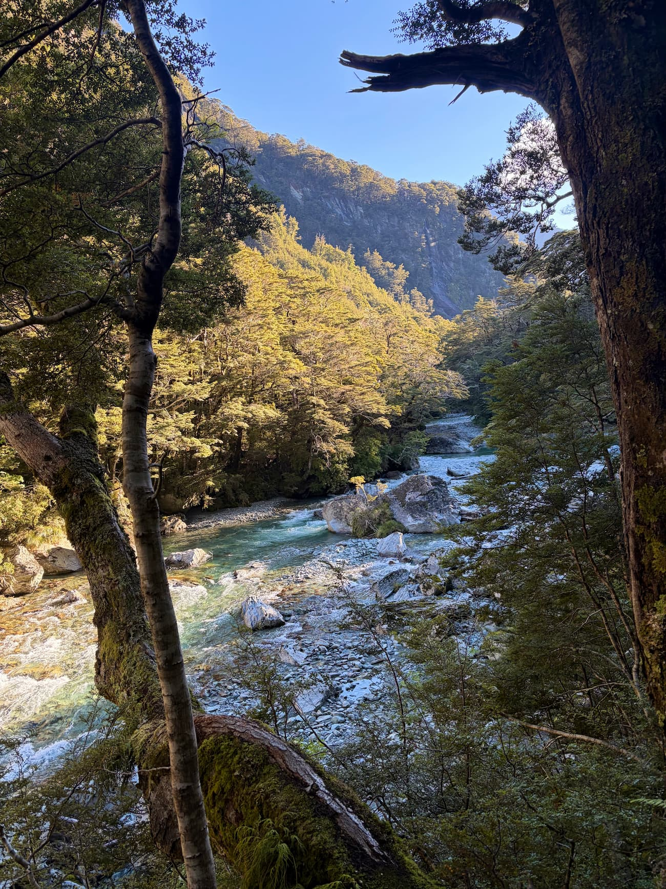
At around 7:30 PM, I finally arrived back at the parking lot at Routeburn Shelter. Surprisingly, my legs felt a lot better than expected.
Here are some statistics from Strava: distance: 27.87 mi, moving time: 9h 28m, vertical elevation gain: 6,273 ft, steps: 58,270, calories burned: 3,897, average HR: 120 bpm.
On the one hour drive back towards Queenstown, I made a quick stop at Bennett's Bluff Lookout for one of the sunsets of all time.
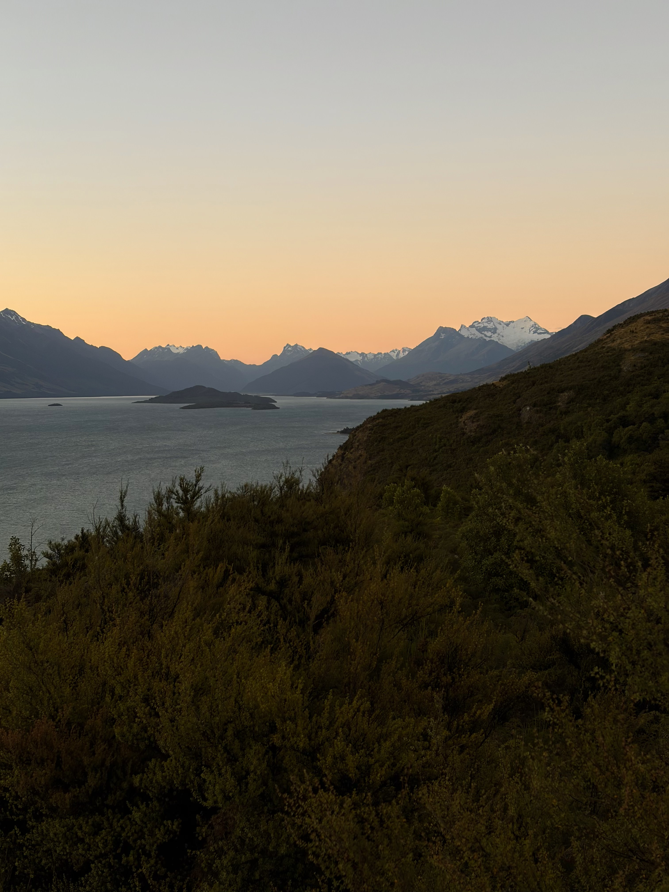
Upon arriving in Queenstown, I went to the most famous burger place in the entire country, called Fergburger. Given that I had burned around 4,000 calories, I ordered three burgers, fries, as well as three pastries from Fergbaker. This was a severe overestimate and one of the burgers went uneaten. Lesson learned.